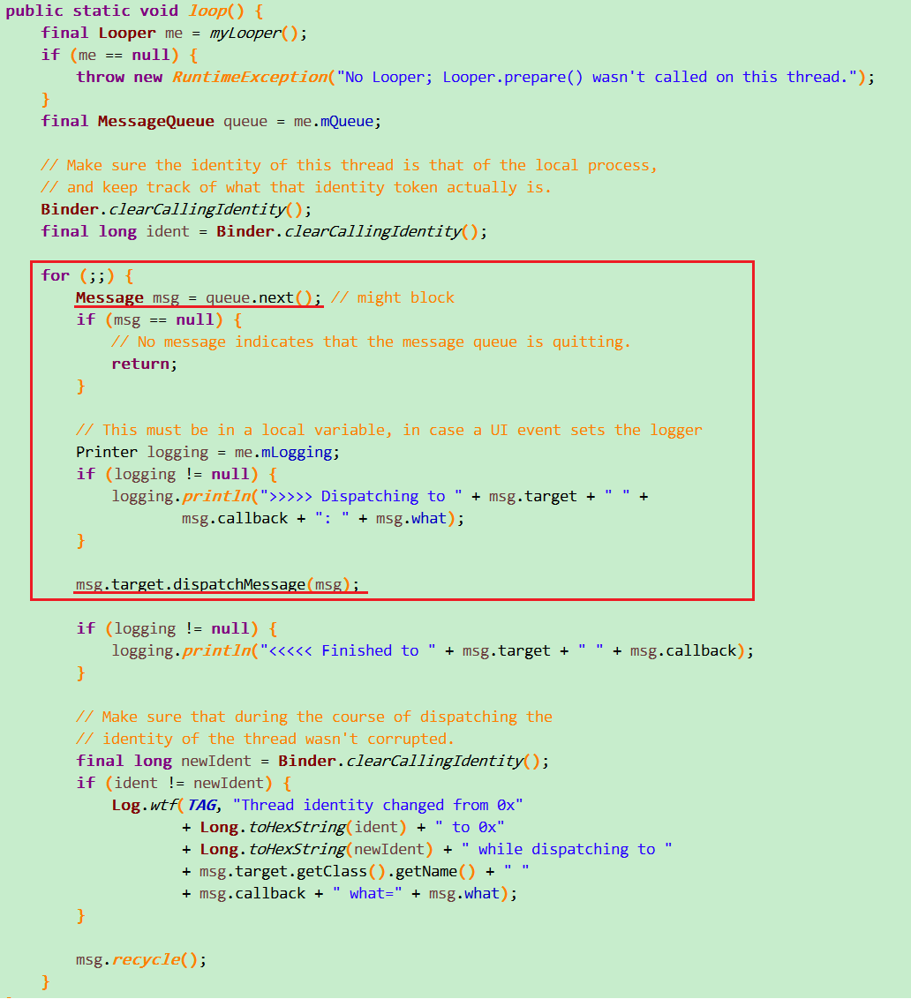

我们都知道，在子线程中尝试进行UI操作或者在主线程中做耗时的操作（网络请求，大量数据库操作等），程序就有可能会报ANR或造成崩溃。
转载请注明出处:http://vincentljdong.github.io/2016/04/11/Handle%E6%B6%88%E6%81%AF%E6%9C%BA%E5%88%B6/
为什么说是一个问题引发的对Handler源码的分析呢？先卖个关子这里先不说。我们先谈一谈Handler机制的通俗解释，如下：
- Handler机制是处理不同线程间通信，那么我们是不是主要涉及到Handler类和Thread类
Thread类（实现了Runnable接口）
MessageQueue:我们应该可以猜出来是消息队列，存放线程存入的消息
Looper:管理线程的工具
Handler类
重写了handlerMessage方法，用于不同线程间通信，举个实际例子：
在实际开发中我们要从网络获取数据，对于网络请求数据是不可能放在主线程（程序启动时就会开启主线程也叫UI线程）中执行，
请求数据是耗时操作，如果放在主线程会造成程序ANR，一般我们是怎样处理，开启一条子线程，
把一切耗时的操作放在子线程执行，让UI线程（从字面就可看出是专门管理UI界面的）去更新UI，
但是问题来了，当我们网络数据请回来后，UI线程就怎么知道去将数据显示在界面呢？
首先在主线中创建子线程，让子线程去完成网络请求这一耗时操作，在此之前需要在主线程创建Handler对象
Handler mHandler=new Handler(){
@Override
public void handleMessage(Message msg) {
super.handleMessage(msg);
}
};
接下来说一下怎样将数据通过主线程更新显示在界面。
- 子线程将自己请求回来的消息放进自己的MessageQueue(消息队列)
- 子线程通过Looper将MessageQueue里面的数据取出
- 子线程通过Looper将数据发送给Handler
- 主线程通过Looper将Handler中的数据取出
- 主线程通过Looper将取出的的数据发送给主线程的MessageQueue
最后主线程执行对消息处理的任务
我相信，大家对Handler机制有一定的了解了，Handler机制在面试中也是经常问的一道题。OK，接下来就要引入标题的问题了，这个问题还是我同学问我的，
Can't create handler inside thread that has not called Looper.prepare()报这个错问我怎样解决，我当时看了一下他的代码(很高冷的^-^)对他说需要在子线程调一下Looper.prepare()，之后在创建Handler对象,但是我们就仅限于知道怎样解决问题吗，显然这不符合我的风格，要想弄清楚原理我们只能从源码着手，OK，我们来看一下Handler的源码，为什么不调用Looper.prepare()就不行呢
Handler无参构造函数
看红色矩形框内Looper.myLooper()方法获取了一个对象，做了一个判断如果mLooper等于空时抛了一个运行时异常，该错误就是Can't create handler inside thread that has not called Looper.prepare(),那么mLooper对象什么时候为空呢？我们需要看一下Looper.myLooper()方法中的代码：
只有一行，sThreadLocal取出的是Looper,如果Looper存在，那么就直接返回Looper，如果不存在那就直接返回null，我们再接着看Looper.prepare()方法中的代码：
不带参的prepare方法中调用的还是带参的prepare方法，我们直接看带参的这个，首先做了一个判断，sThreadLocal是否存在Looper，存在抛出一个运行时异常，如果不存在就直接创建一个新的Looper,这里应该知道为什么要先调用Looper.prepare()方法了吧，只有存在Looper后才能new Handler对象，并且每一个线程只能对应一个Looper。可能有的哥们会问，我在主线程也没有调用Looper.prepare()啊，为什么没有报错呢？这是因为主线程默认就存在一个Looper并不需要我们手动创建。我们看一下主线程ActivityThread类的main方法:
我们看一下红色框内调用了Looper.prepareMainLooper()方法，其实看一下prepareMainLooper()里面的代码我们就会知道调用的还是Looper.prepare()
这次是不是很清楚了，也就是主线程可以直接创建Handler对象，子线程需要先调用Looper.prepare();在创建Handler对象。
在上面我们已经通俗的讲解了Handler机制，现在我们在进一步来了解Handler，在Handler中有好几种发送消息的方法，我们主要看一下sendMessageAtTime(Message msg,long uptimeMillis)方法
msg就是要发送的消息，uptimeMillis是发送消息的时间，然后将这两个参数传入MessageQueue的enqueueMessage方法中，MessageQueue我们在上面已经说了就是消息队列，对消息进行排列，并且有入队出队的方法，MessageQueue通过Looper的构造函数创建的，一个Looper对应一个MessageQueue，而enqueueMessage我们应该能猜出就是入队方法，我们来看一看它的源码：
我们要知道，消息在MessageQueue中并不是用集合或者其他保存起来的，而是使用mMessages对象表示当前待处理的消息，从红色框内可以看出，所谓入队其实就是将消息按照发送消息时的时间进行排序，这里的时间就是上面说的uptimeMillis,通过时间顺序调用msg.next确定下一条消息是什么。看完入队，我们看一下出队，我们来看一看Looper.loop()方法：

你们看出来了什么，next()是不是就是出队的方法，你们有兴趣可以去MessageQueue中看看next()方法源码，我这里就不贴出来了，要不然一说停不下收不了尾。这里简单说一说消息出队的原理，如果MessageQueue存在mMessages待处理消息，那么Looper就取出这条消息，然后下一条就成为mMessages待处理消息，就这里一直循环，如果MessageQueue不存在mMessages待处理消息，那么就成为阻塞状态，直到下一条消息入队。看第二条红色线我们发现出队的消息都经过msg.target.dispatchMessage()进行处理，心细的同学可能知道msg.target其实就是Handler，不知道的同学返回去看sendMessageAtTime方法的源码第六行，接下来我们接着看Handler的dispatchMessage()
看了之后是不是感觉豁然开朗，我们经过一系列的发送消息、入队、出队、接收消息等，到最后调用Handler的handlerMessage方法，这时handlerMessage方法已经在主线程运行，就可以更新UI了。
呼，真心累，就到这里吧，我们下面文章见^-^
每日一碗鸡汤
每当你想放弃的时候，就想想那一刻你的勇气。让成为过去的那一刻的勇气，变成此时此刻，你坚持的勇气。